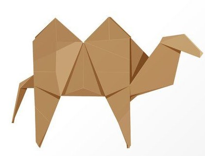

Step by step diagrams are probably the most popular and easiest to follow way to show how to fold things out of paper.Trying to find good origamiinstructions on the internet can be a lot of work thought help your search we've put together the largest database of free origami diagrams anywhere on the internet.
Interesting Facts About Camel
1.Camel's ears are funny
2.Camel's can move easily across the sand because of its specially design feet
3.When they find water,they will drink as mush as possible
Interesting Facts About teddy-bear
1.The term bear-hug was first recorded in 1846.
2.The Oxford English Dictionary dates the first use of the term teddy bear to 1906.
3.The Teddy Bears' Picnic song was originally called The Teddy Bear Two Step.